Enabling The Alpha Channel
|
Default Enable Full Transparency (Zero Opacity)
NOTE: Both -channel a and -channel o actually set transparency in later IM releases. convert logo.jpg -channel rgba -alpha set logo.png
Specify 40% Transparency (60% Opacity)
transparency=40 or
transparency=40 or
opacity=60
|
Converting All Pixels Of A Given Color To Transparent
|
Opaque Image
Method 1: convert logo.jpg -transparent white logo_transparent1.gif
Method 2: convert logo.jpg -fuzz 5% -transparent white logo_transparent2.gif
|
Re-coloring Transparency
|
Transparent Image
Convert Transparent To Color (Wheat) convert logo_transparent2.gif -channel rgba -fill wheat -opaque none logo_transparent_wheat.gif or convert logo_transparent2.gif -background wheat -flatten logo_transparent_wheat.gif
|
Re-coloring All Pixels With Same Color As At Some Location
|
Opaque Image 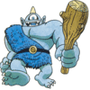 Change All Pixels With Color At Location 10,10 To Red convert cyclops.gif -channel rgba -alpha set -fill red -draw 'color 10,10 replace' cyclops_red.gif
Change All Pixels With Color At Location 10,10 To Transparent convert cyclops.gif -channel rgba -alpha set -fill none -draw 'color 10,10 replace' cyclops_transparent.gif
|
Re-coloring All Pixels Within Some Block
|
Opaque Image
Change Color Of All Pixels Within Block 5,5 to 25,15 To Red convert cyclops.gif -fx "i>=5&&i<=25&&j>=5&&j<=15?red:u" cyclops_block_red.gif or convert cyclops.gif -draw "fill red rectangle 5,5 25,15" cyclops_block_red.gif
Change All Pixels With Color At Location 5,5 to 25,15 To Transparent convert cyclops.gif -alpha set -channel RGBA -fx "i>=5&&i<=25&&j>=5&&j<=15?none:u" cyclops_block_transparent.gif or (recolor area red, then floodfill to transparent) convert cyclops.gif -draw "fill red rectangle 5,5 25,15 fill none matte 10,10 floodfill" cyclops_block_transparent.gif 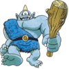
|
Inserting A Transparent Hole
|
Opaque Image
Method 1:
convert logo.jpg -size 25x25 xc:none -alpha set \
Method 2:
convert logo.jpg -size 25x25 xc:white -alpha set \
|
Preserve Multiple Colors And Change The Rest
|
Original Image convert -size 50x50 xc:red xc:magenta xc:green1 xc:cyan xc:blue +append rmgcb.png 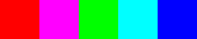 Preserve Red And Blue And Change The Rest To Yellow
convert rmgcb.png -alpha off \( -clone 0 -transparent red -transparent blue -alpha extract -fill yellow -opaque white -transparent black \) \ 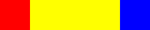 Preserve Red And Blue And Change The Rest To Transparent
convert rmgcb.png -alpha off \( -clone 0 -transparent red -transparent blue -alpha extract -negate \) \ or (Improved By Anthony Thyssen) convert rmgcb.png -alpha off -channel A -transparent red -transparent blue -negate +channel rmgcb_red_none_blue.png 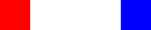 |
Gradient Transparency
|
Opaque Image
Add Gradient Transparency
ww=`convert rainbow_square.jpg -format %w info:` 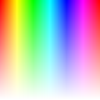 |
Converting Color Images To Grayscale
|
Method 1: Gray, Grayscale, Rec601Luma or Intensity (all the same) gray = 0.299*red+0.587*green+0.114*blue convert gradient.gif -colorspace gray gradient_gray.gif or convert gradient.gif -type grayscale gradient_grayscale.gif or convert gradient.gif -colorspace rec601luma gradient_rec601luma.gif or convert gradient.gif -fx "intensity" gradient_intensity.gif
compare -metric rmse gradient_gray.gif gradient_grayscale.gif null: 0 (0) compare -metric rmse gradient_gray.gif gradient_rec601luma.gif null: 0 (0) compare -metric rmse gradient_gray.gif gradient_intensity.gif null: 0 (0) |
|
Method 2: Rec709Luma and Luminance (both the same) gray: 0.2126*red + 0.7152*green + 0.0722*blue convert gradient.gif -colorspace rec709luma gradient_rec709luma.gif or convert gradient.gif -fx "luminance" gradient_luminance.gif
compare -metric rmse gradient_rec709luma.gif gradient_luminance.gif null: 0 (0) |
|
Method 3: OHTA gray: 0.33333*red + 0.33334*green + 0.33333*blue convert gradient.gif -colorspace ohta -channel red -separate gradient_ohta.gif
|
|
Method 4: Ligntness gray: (max(red,green,blue) + min(red,green,blue))/2 convert gradient.gif -colorspace hsl -channel blue -separate gradient_lightness.gif or convert gradient.gif -fx "lightness" gradient_fx_lightness.gif
compare -metric rmse gradient_lightness.gif gradient_fx_lightness.gif null: 0 (0) |
|
Method 5: Brightness gray: max(red,green,blue) convert gradient.gif -colorspace hsb -channel blue -separate gradient_brightness.gif
|
Stretch Colors To Full Range Of Values
|
Original Image
Get min and max stats for each channel
convert image26s.jpg -separate -format "%[fx:quantumrange*image.minima]" info:
17219 convert image26s.jpg -separate -format "%[fx:quantumrange*image.maxima]" info:
53456 |
|
Method 1: -contrast-stretch: Histogram Stretch All Channels In Concert
convert image26s.jpg -contrast-stretch 0 image26s_stretch1.png 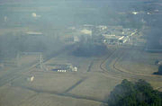 Get min and max stats for each channel convert image26s_stretch1.png -separate -format "%[fx:quantumrange*image.minima]" info:
0 convert image26s_stretch1.png -separate -format "%[fx:quantumrange*image.maxima]" info:
65535 |
|
Method 2: -contrast-stretch: Histogram Stretch Each Channel Separately
convert image26s.jpg -separate -contrast-stretch 0 -combine image26s_stretch2.png 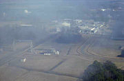 Get min and max stats for each channel convert image26s_stretch2.png -separate -format "%[fx:quantumrange*image.minima]" info:
0 convert image26s_stretch2.png -separate -format "%[fx:quantumrange*image.maxima]" info:
65535 |
|
Method 3: -level: Stretch All Channels In Concert Based Upon Largest Of Min Channel Values and Smallest Of Max Channel Values
minr=`echo $(convert image26s.jpg -separate -format "%[fx:quantumrange*image.minima]" info:) | cut -d\ -f1`
Get min and max stats for each channel convert image26s_stretch3.png -separate -format "%[fx:quantumrange*image.minima]" info:
0 convert image26s_stretch3.png -separate -format "%[fx:quantumrange*image.maxima]" info:
65535 |
|
Method 4: -level: Stretch All Channels In Concert Based Upon Smallest Of Min Channel Values and Largest Of Max Channel Values
minr=`echo $(convert image26s.jpg -separate -format "%[fx:quantumrange*image.minima]" info:) | cut -d\ -f1`
Get min and max stats for each channel convert image26s_stretch4.png -separate -format "%[fx:quantumrange*image.minima]" info:
0 convert image26s_stretch4.png -separate -format "%[fx:quantumrange*image.maxima]" info:
65535 |
|
Method 5: -level: Stretch All Channels Separately Based Upon Each Min And Max Channel Values
minr=`echo $(convert image26s.jpg -separate -format "%[fx:100*image.minima]%%" info:) | cut -d\ -f1`
Get min and max stats for each channel convert image26s_stretch5.png -separate -format "%[fx:quantumrange*image.minima]" info:
0 convert image26s_stretch5.png -separate -format "%[fx:quantumrange*image.maxima]" info:
65535 |
Pad Or Crop To Square Dimensions
|
Image
Pad:
convert monet3.jpg -virtual-pixel background -background white -set option:distort:viewport \ 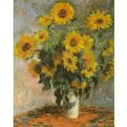 Crop:
convert monet3.jpg -virtual-pixel edge -set option:distort:viewport \ 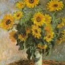 |
Resizing An Image To Square Shape
|
Pad To Square The Size Of The Larger Dimension
max=`convert $infile -format "%[fx:max(w,h)]" info:`
|
|||
|
Crop To Square The Size Of The Smaller Dimension
min=`convert $infile -format "%[fx:min(w,h)]" info:`
|
|||
|
Resize Larger Dimension And Pad Smaller Dimension To 200x200 Square convert monet.jpg -resize 200x200 -background white -gravity center -extent 200x200 monet_padout_200.jpg
|
|||
|
Resize Smaller Dimension And Crop Larger Dimension To 200x200 Square convert monet.jpg -resize '200x200^' -background white -gravity center -extent 200x200 monet_cropout_200.jpg
|
|||
|
Resize Larger Dimension And Pad Smaller Dimension To 200x200 Square Only If Image Larger Than 200x200 convert monet.jpg -resize '200x200>' -background white -gravity center -extent 200x200 monet_padout2_200.jpg
|
|||
|
Resize Smaller Dimension And Crop Larger Dimension To 200x200 Square Only If Image Larger Than 200x200 convert monet.jpg -resize '200x200>^' -background white -gravity center -extent 200x200 monet_cropout2_200.jpg
|
Resize One Image To Match The Size Of Another Image
|
Resize logo image to match size of cyclops image convert logo.jpg -resize `identify -ping -format "%wx%h\!" cyclops.jpg` logo_resize_cyclops.jpg or convert cyclops.jpg logo.jpg -fx "v.p{i*(v.w/u.w),j*(v.h/u.h)}" logo_resize_cyclops.jpg
|
Crop Image Into 2 Non-Overlapping Equal Sized Parts
|
Crop Vertically convert monet.jpg -crop 100%x50% +repage monet_vertical_%d.jpg
|
|||
|
Crop Horizontally convert monet.jpg -crop 50%x100% +repage monet_horizontal_%d.jpg
|
Crop Image Into 4 Non-Overlapping Quadrants
|
Quadrant Crop convert mandril_256x256.jpg -crop 128x128 +repage mandril_128x128_%d.jpg
|
Horizontally Appending Images: Top Aligned, Bottom Aligned And Center Aligned
|
Top Aligned convert monet.jpg cyclops.jpg -background none +append append_top.png
As Of IM 6.4.7-1, Append Is Gravity Sensitive. Thus The Following Is Equivalent To The Above convert monet.jpg cyclops.jpg -background none -gravity north +append append_top.png |
||||
|
Bottom Aligned
convert monet.jpg cyclops.jpg -flip -background none +append -flip append_bottom.jpg
As Of IM 6.4.7-1, Append Is Gravity Sensitive. Thus The Following Is Equivalent To The Above convert monet.jpg cyclops.jpg -background none -gravity south +append append_top.png |
||||
|
Center Aligned
convert monet.jpg cyclops.jpg -format "%h" info: convert monet.jpg cyclops.jpg -gravity center -background none -extent x161 +append append_center.png
As Of IM 6.4.7-1, Append Is Gravity Sensitive. Thus The Following Is Equivalent To The Above convert monet.jpg cyclops.jpg -background none -gravity center +append append_top.png |
Trimming Background Color On Two Sides Only
|
Original Image convert rose: -bordercolor white -border 20 rose_white20.jpg 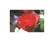 Trim Only On The Top And Bottom
convert \( rose_white20.jpg -bordercolor white -border 1x0 \) \ 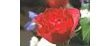 Trim Only On The Left And Right
convert \( rose_white20.png -bordercolor white -border 0x1 \) \ 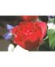 |
Skewing (Shearing) An Image
|
Image
Prior to IM 6.4.2-7, -affine -transform did not respect the virtual-pixel setting. Skew Bottom Edge To Right (SkewX=20 deg)
ang=20
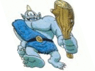
Skew Bottom Edge To Left (SkewX=-20 deg)
ang=-20
Skew Right Edge To Bottom (SkewY=20 deg)
ang=20
Skew Right Edge To Top (SkewY=20 deg)
ang=-20
|
Fuzzy Color Thresholding
|
color="rgb(2,90,164)"
|
Color Range Slicing
|
Slice Mid 50% Of Each Channel By Minimum And Maximum Graylevel Percent
min="25" Or By Mid Graylevel And Range Percent
mid="50"
|
|
Slice Mid 50% Of Each Channel And Intensify By Minimum And Maximum Graylevel Percent
min="25" Or By Mid Graylevel And Range Percent
mid="50"
|
|
Slice Mid 50% Of Each Channel, Intensify And Convert To Grayscale By Minimum And Maximum Graylevel Percent
min="25" Or By Mid Graylevel And Range Percent
mid="50"
|
Grayscale Range Slicing And Thresholding
|
Slice Mid 50% By Minimum And Maximum Graylevel Percent
min="25" Or By Mid Graylevel And Range Percent
mid="50"
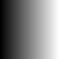
|
|
Threshold Mid 50% By Minimum And Maximum Graylevel Percent
min="25" Or By Mid Graylevel And Range Percent
mid="50"
|
Lower Right Offset Composite
|
convert \( -size 100x100 xc:white \) rose: -gravity southeast -geometry +10+10 rose_white.jpg (note: +10+10 NOT -10-10) 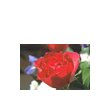 |
Padding An Image To A Power Of 2 Size
|
convert rose: -format "%w x %h" info: Rectangular
p2w=`convert rose: -format "%[fx:2^(ceil(log(w)/log(2)))]" info:`
echo "$p2w x $p2h" convert rose: -background white -gravity center -extent ${p2w}x${p2h} rose_padded.jpg
Square
p2=`convert rose: -format "%[fx:2^(ceil(log(max(w,h))/log(2)))]" info:`
echo "$p" convert rose: -background white -gravity center -extent ${p2}x${p2} rose_padded_sq.jpg 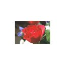
|
Mirror Framing Of An Image (Unfolding Border Region)
|
convert cyclops.jpg \( +clone -border 25x25 \) +swap -virtual-pixel mirror -fx "v.p{i-25,j-25}" cyclops_unfold.jpg or convert cyclops.jpg -virtual-pixel mirror -set option:distort:viewport 150x150-25-25 -distort SRT 0 +repage cyclops_unfold.jpg
|
Mirror Tiling
|
convert question.gif \( +clone -flop \) +append \( +clone -flip \) -append -write mpr:tile +delete \ or convert question.gif \( +clone -extent 100x100 \) +swap -virtual-pixel mirror -fx "v" question_mirror.gif or convert question.gif -virtual-pixel mirror -set option:distort:viewport 100x100 -distort SRT 0 question_mirror.gif
|
Weighted Average Of Multiple Images
|
Examples Use The Same Image To Verify That They Reproduce The Original Unequal Weight Of Two Images composite 33%x67% gradient.gif gradient.gif
33%
Equal Weighting Of More Than Two Images convert gradient.gif gradient.gif gradient.gif -average gradient_equal_ave.gif
1/3
Unequal Weighting Of More Than Two Images
convert \
20% |
Max Or Min Composite Of Two Images
|
Create Horizontal Mirror Of Gradient convert gradient.gif -flop gradient_flop.gif 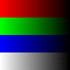 Max Of Gradient And Its Mirror Image convert gradient.gif gradient_flop.gif -compose lighten -composite gradient_max.gif
max of
Min Of Gradient And Its Mirror Image convert gradient.gif gradient_flop.gif -compose darken -composite gradient_min.gif
min of
|
Graph To 1D (LUT) Image: Image Intensity Transformation
|
plist_user="0,20 100,80"
Apply LUT To Image:
|
1D (Row) Image To Graph: Row Profile
|
convert -size 1x101 gradient: -rotate 90 -gamma 2 gradient_gamma2.gif
frac=`convert xc: -format "%[fx:100/255]" info:` Note: LUT expanded to 20 rows for display
|
1D And 2D Equal Weight (Averaging) Convolutions
|
Create Test Image convert -size 100x100 xc:white -bordercolor black -border 28 white_in_black.jpg 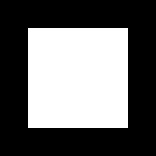 |
|
2D Uniform Weight 11x11 Convolution Using -convolve:
ave11="
|
|
2D Gaussian Weight 11x11 Convolution Using -blur radius,sigma:
convert white_in_black.jpg -blur 0,3.7 white_in_black_blur0x3p7.jpg
|
|
2D Equal Weight 11x11 Convolution Using -blur radius,sigma:
convert white_in_black.jpg -blur 5,65535 white_in_black_blur5x65535.jpg
|
|
1D (Horizontal Only) Equal Weight 11x1 Convolution Using -motion-blur radius,sigma:
convert white_in_black.jpg -motion-blur 5,65535 white_in_black_motion_blur_5x65535.jpg
convert white_in_black.jpg -motion-blur 5,65535 -roll +5+0 white_in_black_motion_blur_5x65535_roll5.jpg
|
Mean And Standard Deviation Filtering
|
Method 1: Use -convolve For 3x3 Equal Weight Average As Mean Mean (Average): Blurs convert cyclops.png -convolve "1,1,1,1,1,1,1,1,1" cyclops_mean1.png
Standard Deviation = sqrt( average of squared image - square of averaged image ): Extracts Edges
convert \
with
|
|
Method 2: Use -blur 0xsigma (sigma=1) For Approximately The Same But Weighted Average For Mean (note: sigma can be increased/decreased to make more/less blurring and broader/narrower edges) Mean (Average): Blurs convert cyclops.png -blur 0x1 cyclops_mean2.png
Standard Deviation = sqrt( average of squared image - square of averaged image ): Extracts Edges
convert \
with
|
Antialiased Image Composite Along Image Boundary
|
Method 1: Linear Ramp Blending
ff=.3
|
|||||
|
Method 2: Partial Cosine Ramp Blending
ff=.3
|
|||||
|
Method 3: Full Cosine Ramp Blending
ff=.3
|
|||||
|
Method 4: Linear Radial Ramp Blending
ff=.3
|
Antialiased Image Composite Along Arbitrary Boundary
|
Composite Background, Overlay And Binary Mask
convert cyclops_backgray.jpg cyclops.jpg \
Composite Background, Overlay And Linearly Ramped Blurred Binary Mask
convert cyclops_backgray.jpg cyclops.jpg \
Composite Background, Overlay And Linearly Ramped Blurred Binary Mask Limited To Inside Cyclops Boundary
convert cyclops_backgray.jpg cyclops.jpg \
|
Mean Of A Region In An Image
|
Original Image
Extract Mask Of Shape convert shape_ellipse.gif -threshold 0 shape_ellipse_mask.gif
Compute Mean As quantumrange*(mean of image)/(mean of mask)
mean_image=`convert shape_ellipse.gif -format "%[mean]" info:`
echo "mean_image = $mean_image"
mean_mask=`convert shape_ellipse_mask.gif -format "%[mean]" info:`
echo "mean_mask = $mean_mask"
mean_shape=`convert xc: -format "%[fx:quantumrange*$mean_image/$mean_mask]" info:`
echo "mean_shape = $mean_shape"
# convert to 8-bit mean if desired
echo "mean_shape8 = $mean_shape8"
Better Method Suggested By Anthony Thyssen:
mean=`convert shape_ellipse.gif \( -clone 0 -threshold 0 \) \
echo "mean = $mean"
# convert to 8-bit mean if desired
echo "mean8 = $mean8" |
Montage By Columns
|
convert logo3.jpg lena2.jpg hatching.jpg zelda3.jpg -transpose miff:- |\
|
Partially Overlapping Blend
|
White Background
convert -background "rgba(255,255,255,0)" \
|
Rounded Corners With Shadow
|
Original Image
Prior To IM 6.4.3-7
convert thumbnail.gif \( +clone -channel a -separate +channel -negate \
As Of IM 6.4.3-7
convert thumbnail.gif \( +clone -alpha extract \
|
Filling Holes
|
Binary Image
Method 1:
convert 1thres_15_small.png -bordercolor white -border 1 \ Method 2:
convert 1thres_15_small.png -bordercolor white -border 1 \ Method 3:
convert 1thres_15_small.png \ Result:
|
Adding Grid Lines
|
Image
Method 1: Overlaying Grid Lines -- Images Stays Same Size
infile="lena.jpg"
Method 2: Inserting Grid Lines -- Image Is Enlarged
infile="lena.jpg"
Method 2: Inserting Grid Lines -- Image Is Enlarged
infile="lena.jpg"
|
Converting An Image To An Overlay
|
Opaque Color Or Grayscale Image
Convert Image To 8-bit Transparent Overlay
convert sample-gray.jpeg -set colorspace gray -negate \
|
Creating A Labeled Animation
|
Images
Create Labeled Animation
convert -label "%f" \
|
Fast Gaussian Blur
|
Input Image
Fast Gaussian Blur
infile="logo2.png"
time convert $infile -virtual-pixel edge -resize ${pct}x${pct}% -gaussian-blur 0x$sigma2 \
time convert $infile -monitor -gaussian-blur 0x$sigma +monitor logo_gaussblur_$sigma.jpg
|
Color Blurring
|
Two-Color Image
Poor Way (Simple Blur): convert redgreen.png -blur 0x10 redgreen_blur_bad.png
Better Way (Blur In Linear Colorspace): convert redgreen.png -colorspace RGB -blur 0x10 -colorspace sRGB redgreen_blur_good.png
|
Histogram With Grid And Tick Marks
|
convert rose.jpg histogram:miff:- |\
|